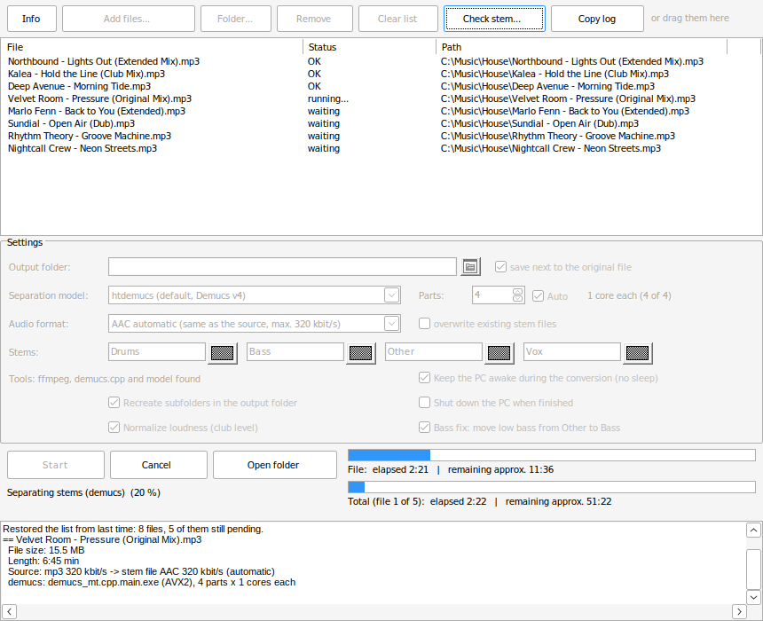

Turn your MP3s into
Traktor Stems
StemMaker splits a track into drums, bass, melody and vocals and saves it as a ready-to-play .stem.mp4 for Traktor. Free, open source and without Python or any setup.
- Free & MIT licensed
- Windows 10 / 11
- Runs locally on your PC
- Whole folders in one go

Everything you need, nothing to install
Unzip, start, drag your music in. On the first start StemMaker downloads ffmpeg and the separation model by itself.
Four real stems
Drums, Bass, Other (melody) and Vox, plus the original as master track, in the format Traktor expects. Names and colours are adjustable.
Modern AI separation
Uses the open-source Demucs v4 model (htdemucs) through demucs.cpp. For the best quality choose htdemucs_ft, for speed Demucs v3.
Built for whole collections
Add complete folders, see a time estimate before you start, let it run overnight. The list survives crashes and power cuts.
Tags and cover art kept
Title, artist, album, genre, year, track number and cover are copied from your MP3, so the stem file looks right in your Traktor collection.
Club level and bass fix
Quiet files are raised to club level without a limiter, so the stem waveforms are easy to read. Low bass is moved into the bass stem, like Traktor does.
Plays nicely with your PC
Picks the fastest build for your processor (AVX2, AVX or generic), keeps the PC awake during long runs and can shut it down when done.
How it works
Three steps from your own music file to a stem file you can load in Traktor.
- Download and unzipGet the ZIP from GitHub and unzip it anywhere, for example to
C:\Tools\StemMaker. No installer, no admin rights. - Drag your music inDrop MP3, WAV, FLAC, AIFF, M4A or OGG files or whole folders into the window, then click Start.
- Load it in TraktorEach track becomes
Title.stem.mp4next to the original or in a folder of your choice. Load it into a stem deck and play.
Listen before you play
The included StemPlayer add-on lets you check a finished stem file without opening Traktor.
- Mute, solo and volume for every stem, with level meters
- A/B comparison with the original mix
- “Rest” mode shows what the separation left out
- Opens by drag & drop or straight from StemMaker

Honest about speed
Separation runs on the processor only, so it takes a while. In return it works on almost any Windows PC and never uploads your music anywhere.
- Current PC: htdemucs takes about twice the song length, Demucs v3 about the song length
- htdemucs_ft (best quality) is about four times slower than htdemucs
- StemMaker learns the speed of your PC and shows how long the list will take
| Computer | htdemucs (default) | Demucs v3 |
|---|---|---|
| Intel i7-12700KF (2021) | approx. 7–8 min | approx. 4 min |
| Intel i5-2500 (2011) | approx. 27 min | approx. 13 min |
Questions and answers
Is StemMaker really free?
Yes. StemMaker is open source under the MIT licence. There are no ads, no account and no paid version. If you like it, you can leave a voluntary donation on Ko-fi.
Which Traktor versions can play the stem files?
The files follow the open NI stem format (an MP4 with master plus four stems and stem metadata), the same way Stemgen builds them. They have been tested in Traktor Pro 4. Any software that reads .stem.mp4 should work.
Do I need a graphics card or Python?
No. StemMaker is a single Windows program. It runs on the CPU and needs neither Python nor a graphics card. You need a 64-bit Windows 10 or 11 and an internet connection on the first start for the downloads (ffmpeg approx. 170 MB, model 81 MB).
Windows shows “Windows protected your PC”. Is that a problem?
StemMaker is not digitally signed, because signing certificates cost money every year. Click “More info” and then “Run anyway”. The full source code is on GitHub, and you can check the download on VirusTotal or build it yourself.
How good is the separation?
StemMaker uses Demucs v4, one of the best freely available separation models. The result is clearly usable for DJing. Like every tool of this kind it is not perfect: when you solo a stem you can sometimes hear small artifacts.
What music can I use?
StemMaker is a tool for music you own, for example tracks you bought or your own productions. Please respect the rights of the artists and only use the stem files for your own purposes.
Is there a command line version?
Yes, AddOns\StemCLI.exe does the same without a window, for batch files or the Windows Task Scheduler.
Ready to make your own stems?
Download the ZIP, unzip it and drag in your first track.